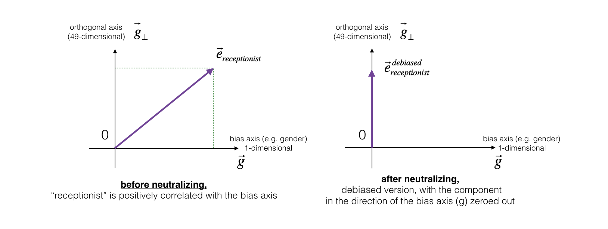

Operations on Word Vectors#
Welcome to your first assignment of Week 2, Course 5 of the Deep Learning Specialization!
Because word embeddings are very computationally expensive to train, most ML practitioners will load a pre-trained set of embeddings. In this notebook you’ll try your hand at loading, measuring similarity between, and modifying pre-trained embeddings.
After this assignment you’ll be able to:
Explain how word embeddings capture relationships between words
Load pre-trained word vectors
Measure similarity between word vectors using cosine similarity
Use word embeddings to solve word analogy problems such as Man is to Woman as King is to ______.
At the end of this notebook you’ll have a chance to try an optional exercise, where you’ll modify word embeddings to reduce their gender bias. Reducing bias is an important consideration in ML, so you’re encouraged to take this challenge!
Important Note on Submission to the AutoGrader#
Before submitting your assignment to the AutoGrader, please make sure you are not doing the following:
You have not added any extra
printstatement(s) in the assignment.You have not added any extra code cell(s) in the assignment.
You have not changed any of the function parameters.
You are not using any global variables inside your graded exercises. Unless specifically instructed to do so, please refrain from it and use the local variables instead.
You are not changing the assignment code where it is not required, like creating extra variables.
If you do any of the following, you will get something like, Grader Error: Grader feedback not found (or similarly unexpected) error upon submitting your assignment. Before asking for help/debugging the errors in your assignment, check for these first. If this is the case, and you don’t remember the changes you have made, you can get a fresh copy of the assignment by following these instructions.
Packages#
Let’s get started! Run the following cell to load the packages you’ll need.
### v1.1
import numpy as np
from w2v_utils import *
1 - Load the Word Vectors#
For this assignment, you’ll use 50-dimensional GloVe vectors to represent words.
Run the following cell to load the word_to_vec_map.
words, word_to_vec_map = read_glove_vecs('data/glove.6B.50d.txt')
You’ve loaded:
words: set of words in the vocabulary.word_to_vec_map: dictionary mapping words to their GloVe vector representation.
2 - Embedding Vectors Versus One-Hot Vectors#
Recall from the lesson videos that one-hot vectors don’t do a good job of capturing the level of similarity between words. This is because every one-hot vector has the same Euclidean distance from any other one-hot vector.
Embedding vectors, such as GloVe vectors, provide much more useful information about the meaning of individual words.
Now, see how you can use GloVe vectors to measure the similarity between two words!
3 - Cosine Similarity#
To measure the similarity between two words, you need a way to measure the degree of similarity between two embedding vectors for the two words. Given two vectors \(u\) and \(v\), cosine similarity is defined as follows:
\(u \cdot v\) is the dot product (or inner product) of two vectors
\(||u||_2\) is the norm (or length) of the vector \(u\)
\(\theta\) is the angle between \(u\) and \(v\).
The cosine similarity depends on the angle between \(u\) and \(v\).
If \(u\) and \(v\) are very similar, their cosine similarity will be close to 1.
If they are dissimilar, the cosine similarity will take a smaller value.

Exercise 1 - cosine_similarity#
Implement the function cosine_similarity() to evaluate the similarity between word vectors.
Reminder: The norm of \(u\) is defined as \( ||u||_2 = \sqrt{\sum_{i=1}^{n} u_i^2}\)
Additional Hints#
# UNQ_C1 (UNIQUE CELL IDENTIFIER, DO NOT EDIT)
# GRADED FUNCTION: cosine_similarity
import numpy as np
def cosine_similarity(u, v):
"""
Cosine similarity reflects the degree of similarity between u and v.
Arguments:
u -- numpy array, a word vector of shape (n,)
v -- numpy array, a word vector of shape (n,)
Returns:
cosine_similarity -- the cosine similarity between u and v
"""
# Special case: if both are identical and all zeros
if np.all(u == v):
return 1.0
### START CODE HERE ###
# Compute dot product between u and v
dot = np.dot(u, v)
# Compute L2 norms
norm_u = np.linalg.norm(u)
norm_v = np.linalg.norm(v)
# Avoid division by zero
if np.isclose(norm_u * norm_v, 0, atol=1e-32):
return 0.0
# Compute cosine similarity
cosine_similarity = dot / (norm_u * norm_v)
### END CODE HERE ###
return cosine_similarity
# START SKIP FOR GRADING
father = word_to_vec_map["father"]
mother = word_to_vec_map["mother"]
ball = word_to_vec_map["ball"]
crocodile = word_to_vec_map["crocodile"]
france = word_to_vec_map["france"]
italy = word_to_vec_map["italy"]
paris = word_to_vec_map["paris"]
rome = word_to_vec_map["rome"]
print("cosine_similarity(father, mother) = ", cosine_similarity(father, mother))
print("cosine_similarity(ball, crocodile) = ",cosine_similarity(ball, crocodile))
print("cosine_similarity(france - paris, rome - italy) = ",cosine_similarity(france - paris, rome - italy))
# END SKIP FOR GRADING
# PUBLIC TESTS
def cosine_similarity_test(target):
a = np.random.uniform(-10, 10, 10)
b = np.random.uniform(-10, 10, 10)
c = np.random.uniform(-1, 1, 23)
assert np.isclose(cosine_similarity(a, a), 1), "cosine_similarity(a, a) must be 1"
assert np.isclose(cosine_similarity((c >= 0) * 1, (c < 0) * 1), 0), "cosine_similarity(a, not(a)) must be 0"
assert np.isclose(cosine_similarity(a, -a), -1), "cosine_similarity(a, -a) must be -1"
assert np.isclose(cosine_similarity(a, b), cosine_similarity(a * 2, b * 4)), "cosine_similarity must be scale-independent. You must divide by the product of the norms of each input"
print("\033[92mAll test passed!")
cosine_similarity_test(cosine_similarity)
cosine_similarity(father, mother) = 0.8909038442893615
cosine_similarity(ball, crocodile) = 0.2743924626137942
cosine_similarity(france - paris, rome - italy) = -0.6751479308174202
All test passed!
Try different words!#
After you get the correct expected output, please feel free to modify the inputs and measure the cosine similarity between other pairs of words! Playing around with the cosine similarity of other inputs will give you a better sense of how word vectors behave.
4 - Word Analogy Task#
In the word analogy task, complete this sentence:
”a is to b as c is to ____”.An example is:
‘man is to woman as king is to queen’ .You’re trying to find a word d, such that the associated word vectors \(e_a, e_b, e_c, e_d\) are related in the following manner:
\(e_b - e_a \approx e_d - e_c\)Measure the similarity between \(e_b - e_a\) and \(e_d - e_c\) using cosine similarity.
Exercise 2 - complete_analogy#
Complete the code below to perform word analogies!
# UNQ_C2 (UNIQUE CELL IDENTIFIER, DO NOT EDIT)
# GRADED FUNCTION: complete_analogy
def complete_analogy(word_a, word_b, word_c, word_to_vec_map):
"""
Performs the word analogy task: a is to b as c is to ____.
Arguments:
word_a -- a word, string
word_b -- a word, string
word_c -- a word, string
word_to_vec_map -- dictionary that maps words to their corresponding vectors.
Returns:
best_word -- the word such that v_b - v_a is close to v_best_word - v_c
"""
# Convert words to lowercase
word_a, word_b, word_c = word_a.lower(), word_b.lower(), word_c.lower()
### START CODE HERE ###
# Get the embeddings for the three words
e_a, e_b, e_c = word_to_vec_map[word_a], word_to_vec_map[word_b], word_to_vec_map[word_c]
### END CODE HERE ###
words = word_to_vec_map.keys()
max_cosine_sim = -100
best_word = None
# Loop over vocabulary
for w in words:
if w in [word_a, word_b, word_c]:
continue
### START CODE HERE ###
# Compute cosine similarity between (e_b - e_a) and (e_w - e_c)
cosine_sim = cosine_similarity(e_b - e_a, word_to_vec_map[w] - e_c)
# Update best match
if cosine_sim > max_cosine_sim:
max_cosine_sim = cosine_sim
best_word = w
### END CODE HERE ###
return best_word
# PUBLIC TEST
def complete_analogy_test(target):
a = [3, 3] # Center at a
a_nw = [2, 4] # North-West oriented vector from a
a_s = [3, 2] # South oriented vector from a
c = [-2, 1] # Center at c
# Create a controlled word to vec map
word_to_vec_map = {'a': a,
'synonym_of_a': a,
'a_nw': a_nw,
'a_s': a_s,
'c': c,
'c_n': [-2, 2], # N
'c_ne': [-1, 2], # NE
'c_e': [-1, 1], # E
'c_se': [-1, 0], # SE
'c_s': [-2, 0], # S
'c_sw': [-3, 0], # SW
'c_w': [-3, 1], # W
'c_nw': [-3, 2] # NW
}
# Convert lists to np.arrays
for key in word_to_vec_map.keys():
word_to_vec_map[key] = np.array(word_to_vec_map[key])
assert(target('a', 'a_nw', 'c', word_to_vec_map) == 'c_nw')
assert(target('a', 'a_s', 'c', word_to_vec_map) == 'c_s')
assert(target('a', 'synonym_of_a', 'c', word_to_vec_map) != 'c'), "Best word cannot be input query"
# assert(target('a', 'c', 'a', word_to_vec_map) == 'c')
print("\033[92mAll tests passed")
complete_analogy_test(complete_analogy)
All tests passed
Run the cell below to test your code. Patience, young grasshopper…this may take 1-2 minutes.
# START SKIP FOR GRADING
triads_to_try = [('italy', 'italian', 'spain'), ('india', 'delhi', 'japan'), ('man', 'woman', 'boy'), ('small', 'smaller', 'large')]
for triad in triads_to_try:
print ('{} -> {} :: {} -> {}'.format( *triad, complete_analogy(*triad, word_to_vec_map)))
# END SKIP FOR GRADING
italy -> italian :: spain -> spanish
india -> delhi :: japan -> tokyo
man -> woman :: boy -> girl
small -> smaller :: large -> larger
Once you get the output, try modifying the input cells above to test your own analogies.
Hint: Try to find some other analogy pairs that will work, along with some others where the algorithm doesn’t give the right answer: * For example, you can try small->smaller as big->?
Congratulations!#
You’ve come to the end of the graded portion of the assignment. By now, you’ve:
Loaded some pre-trained word vectors
Measured the similarity between word vectors using cosine similarity
Used word embeddings to solve word analogy problems such as Man is to Woman as King is to __.
Cosine similarity is a relatively simple and intuitive, yet powerful, method you can use to capture nuanced relationships between words. These exercises should be helpful to you in explaining how it works, and applying it to your own projects!
What you should remember:Cosine similarity is a good way to compare the similarity between pairs of word vectors.
Note that L2 (Euclidean) distance also works.
For NLP applications, using a pre-trained set of word vectors is often a great way to get started.
Even though you’ve finished the graded portion, please take a look at the rest of this notebook to learn about debiasing word vectors.
5 - Debiasing Word Vectors (OPTIONAL/UNGRADED)#
In the following exercise, you’ll examine gender biases that can be reflected in a word embedding, and explore algorithms for reducing the bias. In addition to learning about the topic of debiasing, this exercise will also help hone your intuition about what word vectors are doing. This section involves a bit of linear algebra, though you can certainly complete it without being an expert! Go ahead and give it a shot. This portion of the notebook is optional and is not graded…so just have fun and explore.
First, see how the GloVe word embeddings relate to gender. You’ll begin by computing a vector \(g = e_{woman}-e_{man}\), where \(e_{woman}\) represents the word vector corresponding to the word woman, and \(e_{man}\) corresponds to the word vector corresponding to the word man. The resulting vector \(g\) roughly encodes the concept of “gender”.
You might get a more accurate representation if you compute \(g_1 = e_{mother}-e_{father}\), \(g_2 = e_{girl}-e_{boy}\), etc. and average over them, but just using \(e_{woman}-e_{man}\) will give good enough results for now.
g = word_to_vec_map['woman'] - word_to_vec_map['man']
print(g)
[-0.087144 0.2182 -0.40986 -0.03922 -0.1032 0.94165
-0.06042 0.32988 0.46144 -0.35962 0.31102 -0.86824
0.96006 0.01073 0.24337 0.08193 -1.02722 -0.21122
0.695044 -0.00222 0.29106 0.5053 -0.099454 0.40445
0.30181 0.1355 -0.0606 -0.07131 -0.19245 -0.06115
-0.3204 0.07165 -0.13337 -0.25068714 -0.14293 -0.224957
-0.149 0.048882 0.12191 -0.27362 -0.165476 -0.20426
0.54376 -0.271425 -0.10245 -0.32108 0.2516 -0.33455
-0.04371 0.01258 ]
Now, consider the cosine similarity of different words with \(g\). What does a positive value of similarity mean, versus a negative cosine similarity?
print ('List of names and their similarities with constructed vector:')
# girls and boys name
name_list = ['john', 'marie', 'sophie', 'ronaldo', 'priya', 'rahul', 'danielle', 'reza', 'katy', 'yasmin']
for w in name_list:
print (w, cosine_similarity(word_to_vec_map[w], g))
List of names and their similarities with constructed vector:
john -0.23163356145973724
marie 0.315597935396073
sophie 0.31868789859418784
ronaldo -0.31244796850329437
priya 0.17632041839009402
rahul -0.1691547103923172
danielle 0.24393299216283895
reza -0.07930429672199553
katy 0.2831068659572615
yasmin 0.23313857767928758
As you can see, female first names tend to have a positive cosine similarity with our constructed vector \(g\), while male first names tend to have a negative cosine similarity. This is not surprising, and the result seems acceptable.
Now try with some other words:
print('Other words and their similarities:')
word_list = ['lipstick', 'guns', 'science', 'arts', 'literature', 'warrior','doctor', 'tree', 'receptionist',
'technology', 'fashion', 'teacher', 'engineer', 'pilot', 'computer', 'singer']
for w in word_list:
print (w, cosine_similarity(word_to_vec_map[w], g))
Other words and their similarities:
lipstick 0.27691916256382665
guns -0.1888485567898898
science -0.06082906540929699
arts 0.008189312385880344
literature 0.0647250443345993
warrior -0.20920164641125288
doctor 0.11895289410935043
tree -0.07089399175478092
receptionist 0.3307794175059374
technology -0.13193732447554296
fashion 0.035638946257727
teacher 0.1792092343182567
engineer -0.08039280494524072
pilot 0.0010764498991917074
computer -0.10330358873850498
singer 0.18500518136496297
Do you notice anything surprising? It is astonishing how these results reflect certain unhealthy gender stereotypes. For example, we see “computer” is negative and is closer in value to male first names, while “literature” is positive and is closer to female first names. Ouch!
You’ll see below how to reduce the bias of these vectors, using an algorithm due to Boliukbasi et al., 2016. Note that some word pairs such as “actor”/”actress” or “grandmother”/”grandfather” should remain gender-specific, while other words such as “receptionist” or “technology” should be neutralized, i.e. not be gender-related. You’ll have to treat these two types of words differently when debiasing.
5.1 - Neutralize Bias for Non-Gender Specific Words#
The figure below should help you visualize what neutralizing does. If you’re using a 50-dimensional word embedding, the 50 dimensional space can be split into two parts: The bias-direction \(g\), and the remaining 49 dimensions, which is called \(g_{\perp}\) here. In linear algebra, we say that the 49-dimensional \(g_{\perp}\) is perpendicular (or “orthogonal”) to \(g\), meaning it is at 90 degrees to \(g\). The neutralization step takes a vector such as \(e_{receptionist}\) and zeros out the component in the direction of \(g\), giving us \(e_{receptionist}^{debiased}\).
Even though \(g_{\perp}\) is 49-dimensional, given the limitations of what you can draw on a 2D screen, it’s illustrated using a 1-dimensional axis below.

Exercise 3 - neutralize#
Implement neutralize() to remove the bias of words such as “receptionist” or “scientist.”
Given an input embedding \(e\), you can use the following formulas to compute \(e^{debiased}\):
If you are an expert in linear algebra, you may recognize \(e^{bias\_component}\) as the projection of \(e\) onto the direction \(g\). If you’re not an expert in linear algebra, don’t worry about this. ;)
Note: The paper, which the debiasing algorithm is from, assumes all word vectors to have L2 norm as 1 and hence the need for the calculations below:
# The paper assumes all word vectors to have L2 norm as 1 and hence the need for this calculation
from tqdm import tqdm
word_to_vec_map_unit_vectors = {
word: embedding / np.linalg.norm(embedding)
for word, embedding in tqdm(word_to_vec_map.items())
}
g_unit = word_to_vec_map_unit_vectors['woman'] - word_to_vec_map_unit_vectors['man']
0%| | 0/400000 [00:00<?, ?it/s]
3%|███▋ | 13331/400000 [00:00<00:02, 132840.75it/s]
7%|███████▍ | 27182/400000 [00:00<00:02, 135642.38it/s]
10%|███████████▏ | 40746/400000 [00:00<00:03, 98347.97it/s]
13%|██████████████▏ | 51496/400000 [00:00<00:04, 78523.21it/s]
17%|██████████████████▏ | 66216/400000 [00:00<00:03, 96436.12it/s]
20%|█████████████████████▉ | 80571/400000 [00:00<00:02, 107795.90it/s]
23%|█████████████████████████▍ | 92399/400000 [00:00<00:03, 85982.04it/s]
26%|████████████████████████████▎ | 104088/400000 [00:01<00:03, 93052.28it/s]
29%|███████████████████████████████▌ | 115819/400000 [00:01<00:02, 98899.18it/s]
32%|██████████████████████████████████▍ | 126605/400000 [00:01<00:03, 82366.93it/s]
34%|█████████████████████████████████████ | 135842/400000 [00:01<00:04, 63590.01it/s]
36%|███████████████████████████████████████ | 143422/400000 [00:01<00:03, 65300.48it/s]
38%|█████████████████████████████████████████▍ | 151883/400000 [00:01<00:03, 69497.61it/s]
41%|█████████████████████████████████████████████▏ | 165859/400000 [00:01<00:02, 86214.54it/s]
45%|████████████████████████████████████████████████▊ | 180595/400000 [00:02<00:02, 101576.16it/s]
50%|█████████████████████████████████████████████████████▊ | 199512/400000 [00:02<00:01, 124710.12it/s]
54%|██████████████████████████████████████████████████████████▌ | 217034/400000 [00:02<00:01, 138435.30it/s]
60%|████████████████████████████████████████████████████████████████▎ | 238202/400000 [00:02<00:01, 158709.23it/s]
66%|██████████████████████████████████████████████████████████████████████▊ | 262188/400000 [00:02<00:00, 181515.86it/s]
71%|█████████████████████████████████████████████████████████████████████████████ | 285282/400000 [00:02<00:00, 195614.43it/s]
77%|███████████████████████████████████████████████████████████████████████████████████▎ | 308450/400000 [00:02<00:00, 206124.00it/s]
82%|████████████████████████████████████████████████████████████████████████████████████████▉ | 329448/400000 [00:02<00:00, 206657.33it/s]
88%|██████████████████████████████████████████████████████████████████████████████████████████████▌ | 350348/400000 [00:02<00:00, 198454.92it/s]
93%|████████████████████████████████████████████████████████████████████████████████████████████████████ | 370423/400000 [00:02<00:00, 179311.98it/s]
97%|█████████████████████████████████████████████████████████████████████████████████████████████████████████▏ | 389722/400000 [00:03<00:00, 182979.37it/s]
100%|████████████████████████████████████████████████████████████████████████████████████████████████████████████| 400000/400000 [00:03<00:00, 127755.35it/s]
def neutralize(word, g, word_to_vec_map):
"""
Removes the bias of "word" by projecting it on the space orthogonal to the bias axis.
Ensures gender-neutral words have zero projection on the gender direction.
Arguments:
word -- string, the word to debias
g -- numpy-array of shape (50,), the bias axis (e.g., gender direction)
word_to_vec_map -- dictionary mapping words to their corresponding vectors
Returns:
e_debiased -- debiased word vector
"""
### START CODE HERE ###
# Step 1: Get the word embedding
e = word_to_vec_map[word]
# Step 2: Compute the bias component of e along g
e_biascomponent = (np.dot(e, g) / np.linalg.norm(g)**2) * g
# Step 3: Subtract the bias component to neutralize
e_debiased = e - e_biascomponent
### END CODE HERE ###
return e_debiased
word = "receptionist"
print("cosine similarity between " + word + " and g, before neutralizing: ", cosine_similarity(word_to_vec_map[word], g))
e_debiased = neutralize(word, g_unit, word_to_vec_map_unit_vectors)
print("cosine similarity between " + word + " and g_unit, after neutralizing: ", cosine_similarity(e_debiased, g_unit))
cosine similarity between receptionist and g, before neutralizing: 0.3307794175059374
cosine similarity between receptionist and g_unit, after neutralizing: 3.5723165491646677e-17
Expected Output: The second result is essentially 0, up to numerical rounding (on the order of \(10^{-17}\)).
| cosine similarity between receptionist and g, before neutralizing: : | 0.3307794175059374 |
| cosine similarity between receptionist and g_unit, after neutralizing : | 3.5723165491646677e-17 |
5.2 - Equalization Algorithm for Gender-Specific Words#
Next, let’s see how debiasing can also be applied to word pairs such as “actress” and “actor.” Equalization is applied to pairs of words that you might want to have differ only through the gender property. As a concrete example, suppose that “actress” is closer to “babysit” than “actor.” By applying neutralization to “babysit,” you can reduce the gender stereotype associated with babysitting. But this still does not guarantee that “actor” and “actress” are equidistant from “babysit.” The equalization algorithm takes care of this.
The key idea behind equalization is to make sure that a particular pair of words are equidistant from the 49-dimensional \(g_\perp\). The equalization step also ensures that the two equalized steps are now the same distance from \(e_{receptionist}^{debiased}\), or from any other work that has been neutralized. Visually, this is how equalization works:

The derivation of the linear algebra to do this is a bit more complex. (See Bolukbasi et al., 2016 in the References for details.) Here are the key equations:
Exercise 4 - equalize#
Implement the equalize() function below.
Use the equations above to get the final equalized version of the pair of words. Good luck!
Hint
Use np.linalg.norm
def equalize(pair, bias_axis, word_to_vec_map):
"""
Debias gender-specific words by following the equalize method.
Arguments:
pair -- pair of strings of gender-specific words to debias, e.g. ("actress", "actor")
bias_axis -- numpy array of shape (50,), the bias direction (e.g., gender axis)
word_to_vec_map -- dictionary mapping words to their corresponding vectors
Returns:
e1 -- equalized word vector for the first word
e2 -- equalized word vector for the second word
"""
### START CODE HERE ###
# Step 1: Get the word vectors
w1, w2 = pair
e_w1, e_w2 = word_to_vec_map[w1], word_to_vec_map[w2]
# Step 2: Compute the mean vector
mu = (e_w1 + e_w2) / 2
# Step 3: Compute the projections of mu
mu_B = (np.dot(mu, bias_axis) / np.linalg.norm(bias_axis)**2) * bias_axis
mu_orth = mu - mu_B
# Step 4: Compute bias components of each word
e_w1B = (np.dot(e_w1, bias_axis) / np.linalg.norm(bias_axis)**2) * bias_axis
e_w2B = (np.dot(e_w2, bias_axis) / np.linalg.norm(bias_axis)**2) * bias_axis
# Step 5: Correct bias parts symmetrically
corrected_e_w1B = np.sqrt(abs(1 - np.linalg.norm(mu_orth)**2)) * (
(e_w1B - mu_B) / np.linalg.norm(e_w1B - mu_B)
)
corrected_e_w2B = np.sqrt(abs(1 - np.linalg.norm(mu_orth)**2)) * (
(e_w2B - mu_B) / np.linalg.norm(e_w2B - mu_B)
)
# Step 6: Combine corrected bias and neutral components
e1 = corrected_e_w1B + mu_orth
e2 = corrected_e_w2B + mu_orth
### END CODE HERE ###
return e1, e2
print("cosine similarities before equalizing:")
print("cosine_similarity(word_to_vec_map[\"man\"], gender) = ", cosine_similarity(word_to_vec_map["man"], g))
print("cosine_similarity(word_to_vec_map[\"woman\"], gender) = ", cosine_similarity(word_to_vec_map["woman"], g))
print()
e1, e2 = equalize(("man", "woman"), g_unit, word_to_vec_map_unit_vectors)
print("cosine similarities after equalizing:")
print("cosine_similarity(e1, gender) = ", cosine_similarity(e1, g_unit))
print("cosine_similarity(e2, gender) = ", cosine_similarity(e2, g_unit))
cosine similarities before equalizing:
cosine_similarity(word_to_vec_map["man"], gender) = -0.1171109576533683
cosine_similarity(word_to_vec_map["woman"], gender) = 0.35666618846270376
cosine similarities after equalizing:
cosine_similarity(e1, gender) = -0.23871136142883814
cosine_similarity(e2, gender) = 0.23871136142883811
Expected Output:
cosine similarities before equalizing:
| cosine_similarity(word_to_vec_map["man"], gender) = | -0.11711095765336832 |
| cosine_similarity(word_to_vec_map["woman"], gender) = | 0.35666618846270376 |
cosine similarities after equalizing:
| cosine_similarity(e1, gender) = | -0.23871136142883795 |
| cosine_similarity(e2, gender) = | 0.23871136142883792 |
Go ahead and play with the input words in the cell above, to apply equalization to other pairs of words.
Hint: Try…
These debiasing algorithms are very helpful for reducing bias, but aren’t perfect and don’t eliminate all traces of bias. For example, one weakness of this implementation was that the bias direction \(g\) was defined using only the pair of words woman and man. As discussed earlier, if \(g\) were defined by computing \(g_1 = e_{woman} - e_{man}\); \(g_2 = e_{mother} - e_{father}\); \(g_3 = e_{girl} - e_{boy}\); and so on and averaging over them, you would obtain a better estimate of the “gender” dimension in the 50 dimensional word embedding space. Feel free to play with these types of variants as well!
Congratulations!#
You have come to the end of both graded and ungraded portions of this notebook, and have seen several of the ways that word vectors can be applied and modified. Great work pushing your knowledge in the areas of neutralizing and equalizing word vectors! See you next time.
6 - References#
The debiasing algorithm is from Bolukbasi et al., 2016, Man is to Computer Programmer as Woman is to Homemaker? Debiasing Word Embeddings
The GloVe word embeddings were due to Jeffrey Pennington, Richard Socher, and Christopher D. Manning. (https://nlp.stanford.edu/projects/glove/)